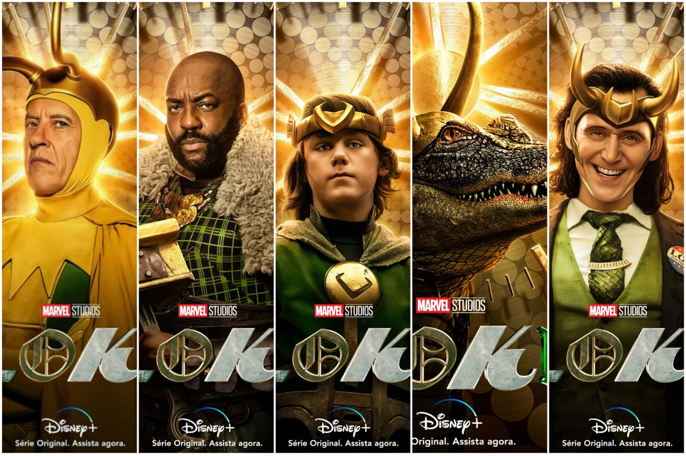
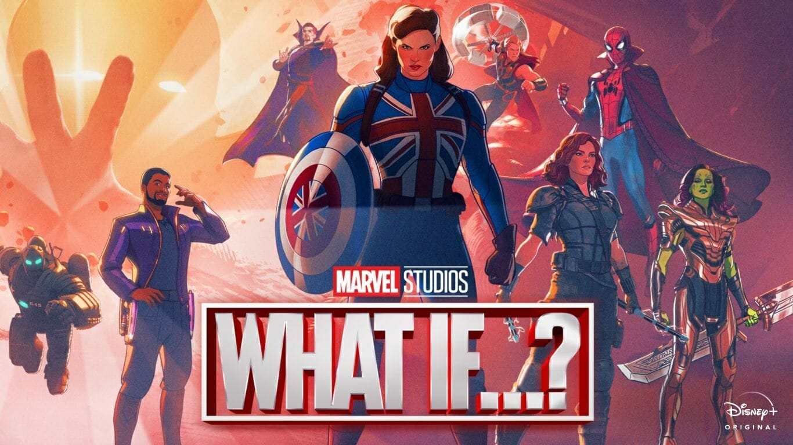
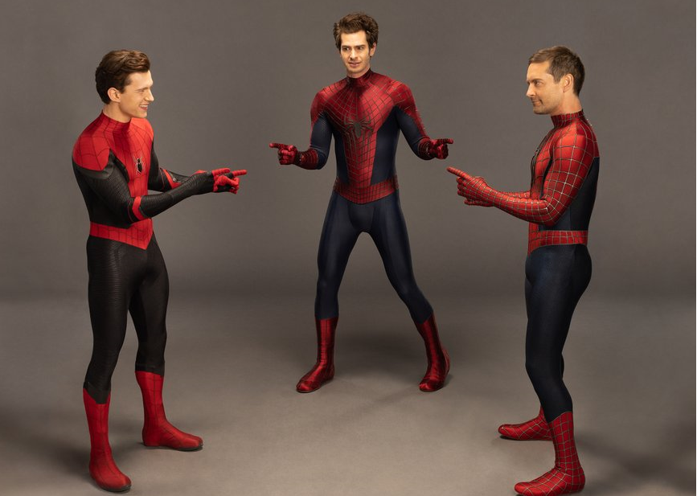
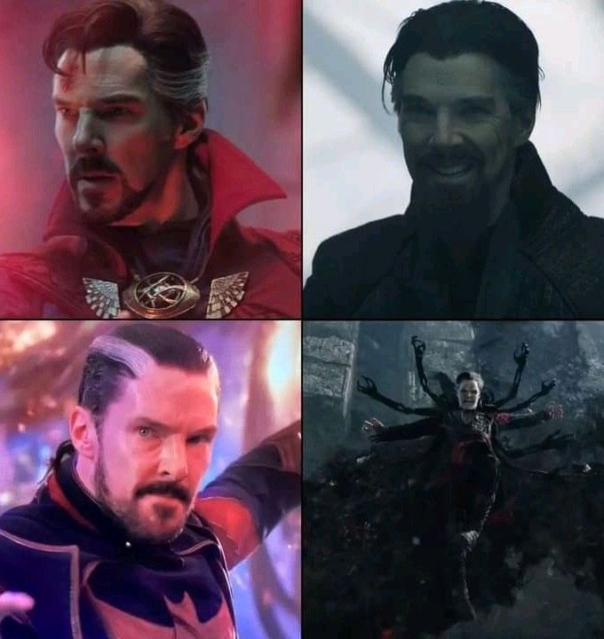
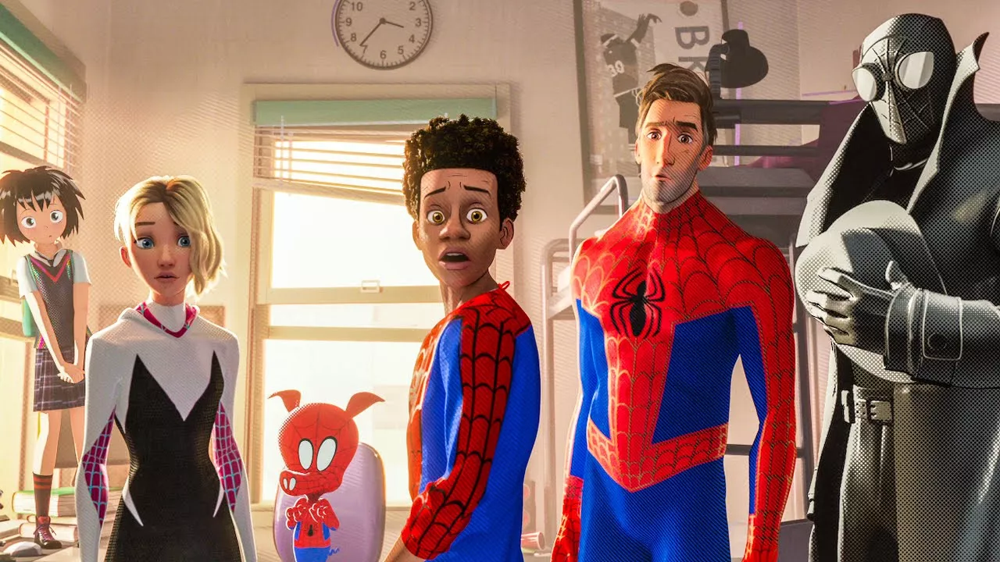
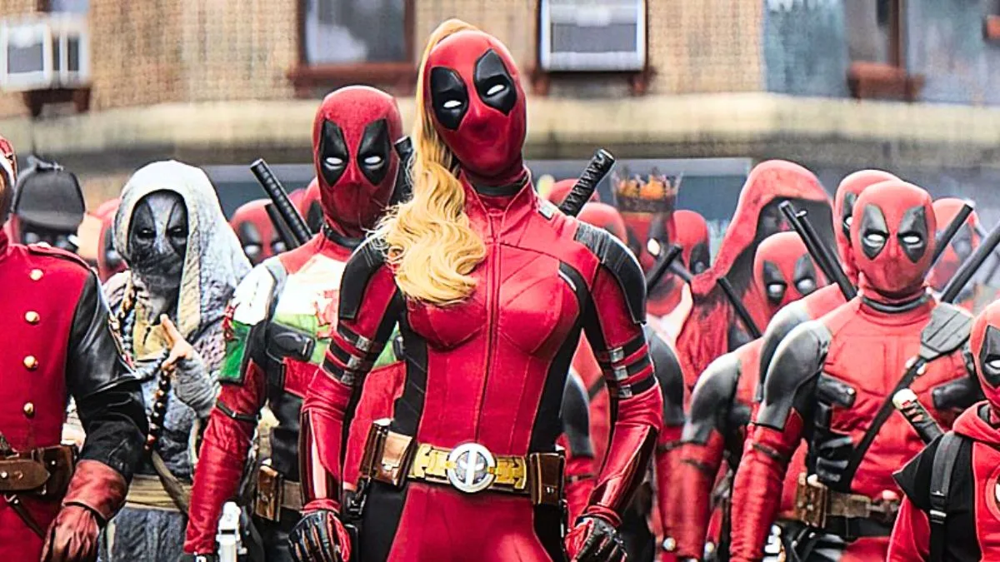
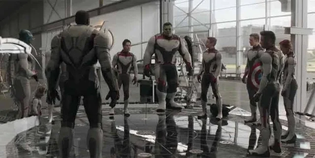

Multiverso 🌌
O Multiverso é o conceito de que existem diversas realidades e linhas do tempo diferentes, cada uma podendo
apresentar versões alternativas dos mesmos personagens e acontecimentos. No UCM, ele permite explorar
histórias que acontecem além da realidade principal e reúne personagens de diferentes universos.
Principais filmes e séries que exploram o Multiverso:
- Loki — apresenta diferentes linhas do tempo, variantes de personagens e a organização responsável por controlar a Linha do Tempo Sagrada.
- What If...? — explora realidades alternativas nas quais acontecimentos importantes da história do UCM acontecem de maneiras diferentes.
- Homem-Aranha: Sem Volta Para Casa — utiliza o Multiverso para reunir diferentes versões do Homem-Aranha e vilões de outros universos.
- Doutor Estranho no Multiverso da Loucura — explora diferentes realidades e apresenta variantes de personagens conhecidos.
-
Homem-Aranha: Através do Aranhaverso — embora pertença ao universo animado do Homem-Aranha e não ao UCM principal,
explora diversas versões do personagem e diferentes universos. - Deadpool & Wolverine — explora diferentes universos e linhas temporais, conectando personagens de diferentes versões do universo Marvel.
-
Vingadores: Ultimato — introduz uma importante utilização da viagem no tempo, criando ramificações temporais que posteriormente
se tornam relevantes para o conceito de Multiverso.






